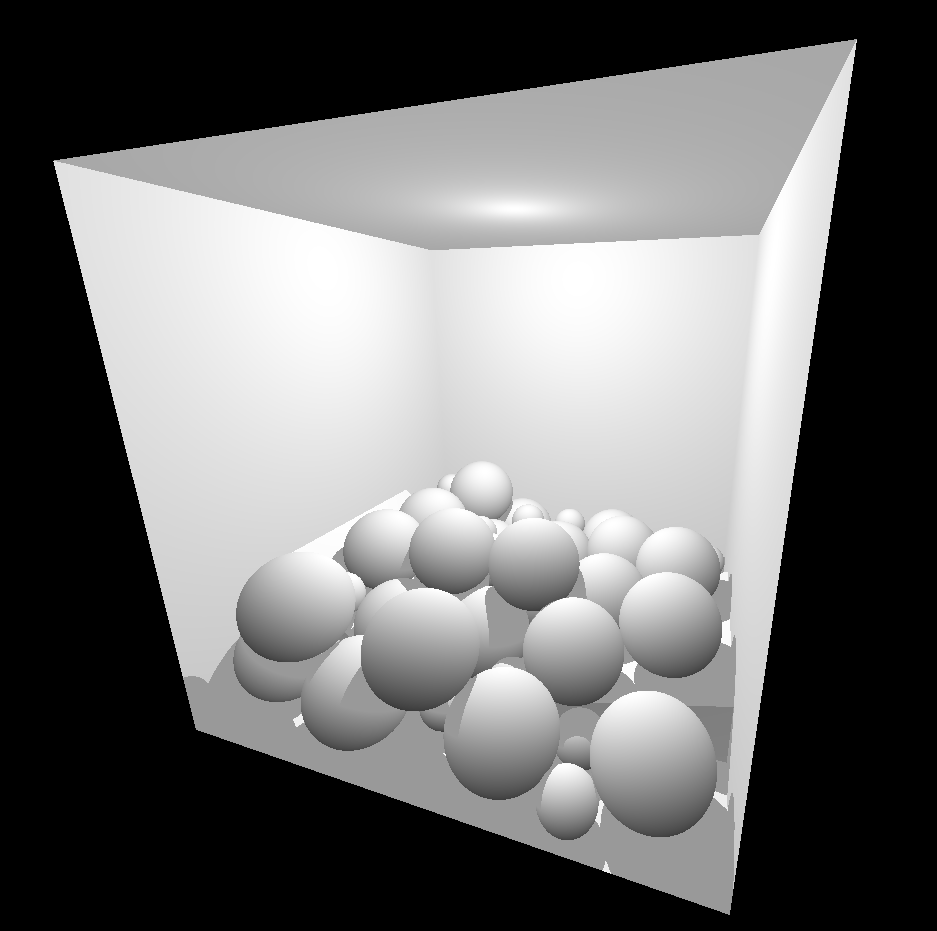
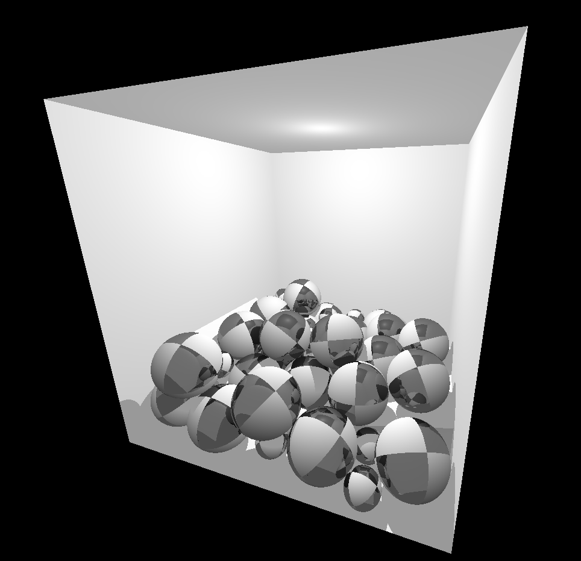
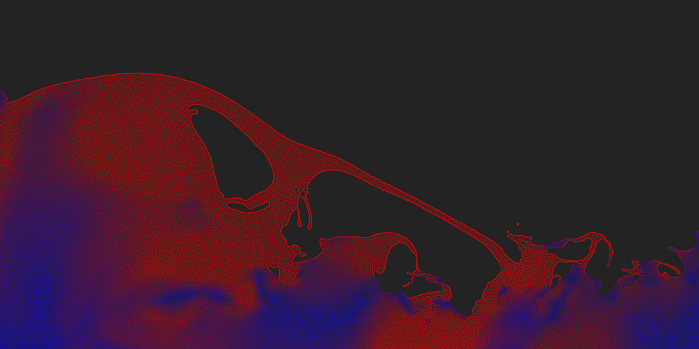
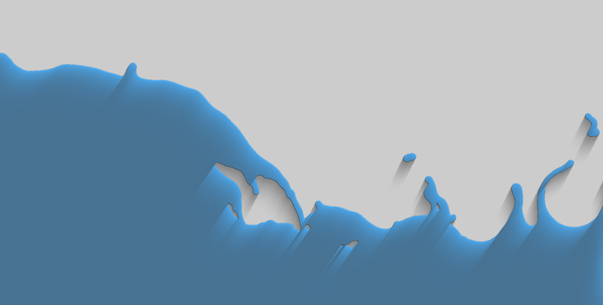

During the first week of class of the Fall 2024 semester, I made an impulsive decision to drop my Introduction to Computer Graphics class in favor of a graduate graphics class my friend recommended to me, named Physically Based Modeling. The decision turned out to be a good one as I had a bunch of fun in that class working on some interesting projects, stuff I wouldn't have gotten around to doing otherwise.
The way the class worked was the semester was partitioned into two to three week chunks and for every chunk we were assigned a project to do on some topic related to physically based modeling. Then, at the end of the chunk, everyone would present what they did for the past few weeks. The fun part was that once we met the minimum requirements, we were encouraged to add extra features that may or may not be related to the original topic. It was cool to come up with your own features, whether it be performance or graphics related, and exciting to see what everyone else came up with during the presentations.
Although I didn't really get to go as deep into each project as I would've perhaps liked due to how the class was structured, I think going over many different topics was a strength of the class. It allowed me to kind of get a good feel for each of the topics before moving onto the next one. If you're interested in physics and graphics programming, I would highly recommend giving the class a shot.
Balls in a Box
For the first project of the semester, we were assigned to render a ball bouncing around in a box. This project was just meant to get you familiar with your graphics library of choice and as such, the requirements were rather lax. You could model the ball as some frictionless sphere with a 1.0 coefficient of restitution and you didn't even have to implement continuous collision detection. However considering I already had an entire graphics engine setup, I wanted to challenge myself and account for friction, and therefore angular velocity / acceleration.
Quaternions
We need some way of storing and updating the orientation of each sphere relative to their object space orientation. Usually, we would use pitch/yaw/roll rotation matrices, however it's hard to rotate along an arbitrary axis with this method. You can encode an arbitrary axis-angle rotation into a matrix, but a more elegant and widely used solution exists: quaternions.
A quaternion is a four-dimensional value, $(s, i, j, k)$, that represents a rotation + scaling in 3D space, much like a un-normalized axis-angle rotation matrix. They were originally discovered as an extension to the complex numbers, but in this context you can just think of them as a weird rotation matrix. Specifically, a rotation of angle $\theta$ around the unit axis $(x, y, z)$ can be represented by the quaternion
$$\left(\cos{\left(\frac{\theta}{2} \right)}, x \sin{\left(\frac{\theta}{2} \right)}, y \sin{\left(\frac{\theta}{2} \right)}, z \sin{\left(\frac{\theta}{2} \right)} \right)$$
If you have two quaternions $p, q$, and wanted to know the quaternion that represented first applying $p$ then $q$, you can just multiply them together. Notice that just like matrices, quaternion multiplication is not commutative. Then, if you have a vector $v$ and want to find the vector after applying the rotation quaternion $q$, you can compute
$$qv_qq^*$$
where $q^*$ is the conjugate of $q$ and $v_q$ is just $(0, v_x, v_y, v_z)$. Computing the conjugate is much like complex numbers, you just keep the scalar portion and negate the imaginary portions, so $(s, -i, -j, -k)$. Finally, the resulting vector will be encoded in the imaginary portion of the result.
Since you will lose some precision with floating point math, you will have to constantly renormalize your quaternions to avoid inadvertently scaling your vectors when applying the quaternion transform. This is actually a big advantage that quaternions have over axis-angle rotation matrices, as with rotation matrices you would have to re-orthogonalize the matrix which involves something like Gram-Schmidt, as opposed to just normalizing a 4D vector.
Quaternions also have a bunch of other advantages over axis-angle matrices: they only need 4 numbers to store, multiplying them is much faster (16 or so multiplications vs 64), you can blend between two quaternions using SLERP, and you can easily convert from a quaternion back to an axis-angle if needed.
Integration
Before we figure out what to do in the event of a collision, lets first figure out what to do when there are no collisions. For each sphere, I will keep track of its position and velocity as a 3D vector, and for each timestep I'll use the previous timestep's position and velocity with the current timestep's acceleration (stuff like gravity, collisions) to compute the current timestep's position and velocity. In other words:
$$p_{t + 1} = p_{t} + v_{t}$$ $$v_{t + 1} = v_{t} + a_{t}$$
What we have here is Eulerian integration. It's very simple but also has a tendency to be very unstable, but for now it's perfectly good enough. We can actually do the same thing with orientation and angular velocity, we use a quaternion to keep track of the current orientation, and we use a 3D vector to keep track of the angular velocity (the direction tells us the axis, the magnitude tells us the rotation velocity around that axis). Putting it all together, here is what updating one sphere for one timestep looks like:
Sphere s = this.spheres.get(i);
//update position / orientation
s.pos.addi(s.vel.mul(settings.timeStep));
Vec3 axis = new Vec3(s.ang_vel);
float omega = axis.length();
axis = axis.normalize();
Quaternion quat_rot = MathUtils.quaternionRotationAxisAngle(omega * settings.timeStep, axis.x, axis.y, axis.z);
Quaternion n_orient = quat_rot.mul(s.orient);
n_orient.normalize();
s.orient = n_orient;
//update velocity / angular velocity
s.vel.addi(accel[i]);
s.ang_vel.addi(ang_accel[i]);
The reason why we store the angular velocity in this odd format is so that directly adding two velocities makes sense, useful for when we want to add some angular acceleration to the angular velocity.
Collision Resolution
In any physics engine there are two parts to handling collisions, collision detection and collision resolution. Detection refers to figuring out between which two objects the collision happened, at what point did it happen, what were the relative velocities at that point, etc. Then, resolution will take all that information and update the state of the two objects as to provide a physically accurate explanation of how the collision would play out. Usually that would involve updating the position, velocity, and angular velocity of each object involved.
Here, the resolution step is significantly more complicated than the detection step, but it's mainly due to the simplicity of the objects involved in the collisions. However once your primitives become more complicated, arbitrary triangle meshes for example, the detection step gets much more involved while the resolution step doesn't change much. For here, I will just cover the resolution step and I'll go over detection in more detail when covering the rigid body physics engine.
From the detection phase, we are supplied with which two bodies are colliding, where the collision point is, and the collision normal.
Body a, b;
Vec3 cpt; //collision point in world space
Vec3 unit_norm; //should be facing towards body a
First, we compute the relative velocity of b from the perspective of a
at the collision point.
//compute relative velocity from a's perspective.
//this means rvel should be pointing in the same direction as unit_norm if there is a collision
Vec3 rvel = calcBodyPtVel(cpt, this.b);
rvel.subi(calcBodyPtVel(cpt, this.a));
Next, we see if there is actually a collision happening. We can tell by seeing if the dot product between
rvel and unit_norm is non-negative. If it is negative, then it means the two
bodies are separating and we don't want to trigger any collision here.
float norm_mag = MathUtils.dot(unit_norm, rvel);
if (norm_mag < 0) {
//no collision, they are travelling away
return;
}
If there is a collision, we can separate the relative velocity out into its normal and tangent components. We can also compute some other useful stuff.
Vec3 norm = unit_norm.mul(MathUtils.dot(unit_norm, rvel));
Vec3 tang = rvel.sub(norm);
float tang_mag = tang.length();
Vec3 unit_tang = new Vec3(tang).normalize();
//vector from center of shape to collision point
Vec3 radiusvec_a = new Vec3(a.pos, cpt);
Vec3 radiusvec_b = new Vec3(b.pos, cpt);
Now, we can actually handle the normal and tangent components separately. First the normal component:
// - normal component
float norm_scalar = 0; //used to compute friction
{
//axis of rotation that the normal component will apply torque to
Vec3 norm_rotaxis_a = MathUtils.cross(unit_norm, radiusvec_a);
Vec3 norm_rotaxis_b = MathUtils.cross(radiusvec_b, unit_norm);
//moment of inertia around axes in question
float norm_inv_moment_a = 0, norm_inv_moment_b = 0;
if (norm_rotaxis_a.lengthSq() != 0) {
norm_rotaxis_a.normalize();
norm_inv_moment_a = 1.0f / calcMomentAroundAxis(itensorworld_a, norm_rotaxis_a);
}
if (norm_rotaxis_b.lengthSq() != 0) {
norm_rotaxis_b.normalize();
norm_inv_moment_b = 1.0f / calcMomentAroundAxis(itensorworld_b, norm_rotaxis_b);
}
//compute normal scalar.
float norm_inv_mass_sum = a.inv_mass + b.inv_mass;
norm_inv_mass_sum += MathUtils.cross(radiusvec_a, unit_norm).lengthSq() * norm_inv_moment_a;
norm_inv_mass_sum += MathUtils.cross(radiusvec_b, unit_norm).lengthSq() * norm_inv_moment_b;
norm_scalar = norm_mag * (1.0f + coll_restitution) / norm_inv_mass_sum;
//compute accelerations due to force
accel_a.addi(unit_norm.mul(norm_scalar * a.inv_mass));
accel_b.addi(unit_norm.mul(-norm_scalar * b.inv_mass));
angaccel_a.addi(MathUtils.cross(unit_norm, radiusvec_a).mul(-norm_scalar * norm_inv_moment_a));
angaccel_b.addi(MathUtils.cross(unit_norm, radiusvec_b).mul(norm_scalar * norm_inv_moment_b));
}
And finally the tangent component. Notice that we saved norm_scalar. This is so we can do static / dynamic
friction according to Coulumb's Law of Friction.
// - tangent component
{
//axis of rotation that the tangent component will apply torque to
Vec3 tang_rotaxis_a = MathUtils.cross(unit_tang, radiusvec_a);
Vec3 tang_rotaxis_b = MathUtils.cross(radiusvec_b, unit_tang);
//moment of inertia around axes in question
float tang_inv_moment_a = 0, tang_inv_moment_b = 0;
if (tang_rotaxis_a.lengthSq() != 0) {
tang_rotaxis_a.normalize();
tang_inv_moment_a = 1.0f / calcMomentAroundAxis(itensorworld_a, tang_rotaxis_a);
}
if (tang_rotaxis_b.lengthSq() != 0) {
tang_rotaxis_b.normalize();
tang_inv_moment_b = 1.0f / calcMomentAroundAxis(itensorworld_b, tang_rotaxis_b);
}
//compute tangent scalar
float tang_inv_mass_sum = a.inv_mass + b.inv_mass;
tang_inv_mass_sum += MathUtils.cross(radiusvec_a, unit_tang).lengthSq() * tang_inv_moment_a;
tang_inv_mass_sum += MathUtils.cross(radiusvec_b, unit_tang).lengthSq() * tang_inv_moment_b;
//friction
float tang_scalar = tang_mag / tang_inv_mass_sum; //static friction
if (tang_scalar > norm_scalar * static_friction) {
//if the force is too great for static friction, switch to dynamic friction
tang_scalar = norm_scalar * dynamic_friction;
}
accel_a.addi(unit_tang.mul(tang_scalar * a.inv_mass));
accel_b.addi(unit_tang.mul(-tang_scalar * b.inv_mass));
angaccel_a.addi(MathUtils.cross(unit_tang, radiusvec_a).mul(-tang_scalar * tang_inv_moment_a));
angaccel_b.addi(MathUtils.cross(unit_tang, radiusvec_b).mul(tang_scalar * tang_inv_moment_b));
}
Since we're dealing with spheres, the moment of inertia is the same regardless of which axis we choose to apply torque. Later with more arbitrary shapes, we'll need to use the moment of inertia tensor to find the correct moment of inertia for the specific axis that we are applying torque to.
Finally, we want to shift both bodies such that they are just barely colliding. We do this so that bodies that are supposed to be resting on top of each other can remain in contact.
float slop = 0.01f; //allow penetrating objects to keep penetrating slightly
float correction = Math.max(penetration - slop, 0);
Vec3 poscorr_a = unit_norm.mul(correction * a.inv_mass / (a.inv_mass + b.inv_mass));
Vec3 poscorr_b = unit_norm.mul(-correction * b.inv_mass / (a.inv_mass + b.inv_mass));
a.pos.addi(poscorr_a);
b.pos.addi(poscorr_b);
Results
Since I had just completed my raytracing projects and was too lazy to go find meshes or create them myself, I quickly threw together some simple ray-casted graphics. It had the advantage that shadows were free and the spheres didn't have any weird bumps on them due to surface normal interpolation.

As perfectly smooth spheres wouldn't show off all the work I put into supporting friction, I also added a snazzy texture on the sphere, whether or not the ray bounces is determined by where it lands in the model space of the sphere.

SPH
For the second project, we had been going over flocking algorithms in lecture, so we were assigned to do something related to flocking. At its core, flocking is just a particle system where the motion of particles is influenced by other particles surrounding it. This sounds very similar to Smoothed Particle Hydrodynamics, something I had already done a project on before. So for this project, I wanted to do SPH, but additionally optimize it as much as possible.
SPH Recap
SPH simulates fluids by discretizing it by mass as opposed to methods like Lattice Boltzmann which discretizes space. It's a particle based interpretation of the Navier-Stokes equations:
$$\rho \frac{dv}{dt} = -\nabla p + \mu \nabla^2 v + f$$
So at each point, the acceleration of the fluid, $\rho \frac{dv}{dt}$, is equal to the sum of forces from the pressure gradient, $-\nabla p$, viscous diffusion, $\mu \nabla^2 v$, and external forces, $f$. Since we've concentrated all the mass at the particles, we just need to consider the pressure and viscosity at each particle, much better than an infinite continuum of points.
The issue is that since we've concentrated all the mass at the particles, things like the pressure or density field are not well defined. This is why we apply a smoothing kernel to each particle to 'spread out' the mass of each particle. This means that particles only interact with other particles within a limited range, or 'smoothing radius', which enables quite a few optimizations.
Spatial Hashing
Since each particle only interacts with other particles in a limited radius, if we can somehow only loop through the particles that are close to the current particle, then we can speed up the simulation significantly. The idea behind spatial hashing is to partition space into a bunch of grid cells, then for each particle we determine which grid cell it is in, then loop through only the particles in adjacent grid cells.
First, for each grid cell we assign a hash ID (thus the name Spatial Hashing). Then, we sort all the particles by their grid hash IDs. Finally, for each unique ID, we compute the index of the first particle that has that ID, which allows us to iterate through all particles within a cell. Of course if two cells happen to hash to the same ID, then we'll iterate over some extra particles, but that should be infrequent enough with a decent hash function.
Bitonic Merge Sort
So the first optimization is to speed up the sorting process. In my original implementation I just transferred the particles to the CPU to sort, then transferred the sorted list of particles back to the GPU. However, CPU-GPU memory transfers are a huge bottleneck when doing GPU programming, and doing this sort entirely on the GPU would probably speed it up immensely.

Each horizontal line represents a value and each vertical bar represents a comparator that compares the two values and swaps them if the top one is greater than the bottom one. The idea is that if you pass an arbitrary array into the left side of this system, this fixed system of comparators will make it so that your array will be sorted by the time it gets to the right side.
To prove the correctness of bitonic merge sort, we can use the zero-one principle which states that if a sorting network can correctly sort all sequences of zeroes and ones, it can also correctly sort arbitrary input. At a high level, each blue box expects the top and bottom half of its input to be independently sorted, and the comparators within the box will somehow merge the two sorted halves into one sorted whole. Observe that each independent element is already sorted, so our base case is covered. I just need to prove that each blue box correctly merges two sorted arrays.
Let the top half of the input into the orange box be $A[0], \cdots, A[n - 1]$ and the bottom half be $B[0], \cdots, B[n - 1]$. It's assumed that $A[0] \leq A[1] \leq \cdots \leq A[n - 1]$ and $B[0] \leq B[1] \leq \cdots \leq B[n - 1]$. After the orange box finishes the top and bottom half become $A', B'$ respectively, defined as $A'[i] = \min(A[i], B[n - 1 - i])$ and $B'[i] = \max(A[n - 1 - i], B[i])$. I'll prove that after the orange box executes, the following properties will become true:
- $A'[i] \leq B'[j]$ for all $0 \leq i, j \lt n$
- $A', B'$ are bitonic
First the proof for $1)$. We'll cover this in 3 cases:
- $n - 1 - i = j$: Observe that this implies $n - 1 - j = i$. Then, $$A'[i] = \min(A[i], B[n - 1 - i]) = \min(A[i], B[j])$$ $$B'[j] = \max(A[n - 1 - i], B[j]) = \max(A[i], B[j])$$ Since $\min(A[i], B[j]) \leq \max(A[i], B[j])$, $A'[i] \leq B'[j]$.
- $n - 1 - i \lt j$: We can deduce that $$A'[i] \leq B[n - 1 - i]$$ $$B'[j] \geq B[j]$$ Since $n - 1 - i \lt j$, $B[n - 1 - i] \leq B[j]$, therefore $A'[i] \leq B'[j]$.
- $n - 1 - i \gt j$: Observe that this implies $n - 1 - j \gt i$. We can also deduce $$A'[i] \leq A[i]$$ $$B'[j] \geq A[n - 1 - j]$$ Since $n - 1 - j > i$, $A[i] \leq A[n - 1 - j]$, therefore $A'[i] \leq B'[j]$.
Next the proof for $2)$. Observe that as we increase $i$, $A[i]$ increases monotonically and $B[n - 1 - i]$ decreases monotonically. If we take the minimum of the two, the first portion will always equal $A[i]$ and the second will equal $B[n - 1 - i]$. Since one is increasing and the other is decreasing, $A'[i]$ will be bitonic. We can do the same thing with $B'[i]$, except it will just be bitonic in the other direction ('hill' vs 'valley').
We'll call $1)$ the separation lemma and $2)$ the bitonicity lemma. Finally, I'll show that we can also prove the separation and bitonicity lemmas for the red boxes given bitonic input. Let the top half of the input be $A$ and the bottom half be $B$ just like before. However the output is different with $A'[i] = \min(A[i], B[i])$ and $B'[i] = \max(A[i], B[i])$.
Proof for $1)$. WLOG I'll assume that the input is a 'hill' bitonic sequence, so the prefix and suffix consist of $0$s and the middle is $1$s. Observe that if $A'$ ever has any $1$s, then that implies that $B'$ consists entirely of $1$s. Likewise, if $B'$ ever has any 0s, that implies that $A'$ consists entirely of $0$s. Therefore, it's never the case that $A'$ has a $1$ and $B'$ has a $0$.
Proof for $2)$. WLOG I'll assume that the input is a 'hill' bitonic sequence, so the prefix and suffix consist of $0$s and the middle is $1$s. Observe that if the $1$s are entirely contained within $A$ or $B$, the result will be $A'$ entirely consisting of $0$s and $B'$ being equal to the half that contained the $1$s, therefore $A', B'$ are bitonic. Then, the only remaining case is if the subarray of $1$s is split between the suffix of $A$ and prefix of $B$, which means that $A$ is monotonically increasing and $B$ is monotonically decreasing. We can use similar reasoning to when we proved $2)$ for the brown boxes to show that $A', B'$ are bitonic in this case.
Since each red box separates and maintains bitonicity for its two halves, we can use induction to prove that after the red boxes are done, the entire array will be sorted via the separation lemma.
Thread Local Memory
My second optimization was to speed up memory accesses by utilizing the thread group local cache. Compared to accessing GPU main memory, the thread group local cache is around 50x faster. So my idea is to make each thread in each group first pull a few particles from main GPU memory to the group cache, then afterwards all the threads in the group can just reference the cache.
The main limitation to this is that the amount of memory each thread group can access locally is very limited. This may change depending on the GPU that you have, but I found that I'm limited to around 16KB of local memory per thread group. Since my workgroups were relatively small, that didn't matter too much but it's something to keep in mind. So to setup local memory, you just declare this somewhere in the global context:
shared Particle local_particle_data[gl_WorkGroupSize.x];
Then before I do any computation, I tell each thread to pull a particle from the next grid cell into the local cache, with an execution barrier to make sure they're all synchronized.
//each thread looks at local_id 0 particle, and figures out the hash for that one
int local0_hash = computeHash(local0_hpos + d_hpos[i]);
int local0_start = hashLUT[local0_hash];
//then, load the particle into local memory
if(local0_start + local_id < nr_particles) {
local_particle_data[local_id] = particleData[local0_start + local_id];
}
barrier();
Finally I just add a check to when we're loading particles from memory and load it from the local cache if possible.
Particle getParticle(int ind, int local_particle_start) {
if(ind >= local_particle_start && ind < local_particle_start + gl_WorkGroupSize.x) {
return local_particle_data[ind - local_particle_start];
}
return particleData[ind];
}
We can actually also use thread local memory to speed up our implementation of bitonic merge sort. For blocks that are less than or equal to 1024 or so, we can do the sort entirely within thread local memory and only resort to using GPU main memory when the number of particles gets too large to fit within local memory.
Results
In total, I managed to increase the amount of particles from 4000 to 64000 at 60fps. This is not bad, however I've seen other simulations comfortably handle over 1 million particles so I still have a long way to go.

I also improved the quality of the density field rendering, adding some normal mapping to the edges and shadows.

XPBD
For the third project we were assigned to create something related to a spring-mass-damper system. This project was to show how higher order integration techniques such as RK4 improve the stability and accuracy of your simulation. I also wanted to explore some alternative and perhaps more performant methods of achieving this stability, and since I was interested in physics for games I didn't really care about accuracy. Therefore, I also looked into position based dynamics, specifically XPBD.
RK4
RK4 is a fourth order integration technique which means that the total accumulated error is on the order $h^4$ where $h$ is the timestep. Implementing it is actually quite easy, it pretty much boils down to making a bunch of first order guesses as to what the next value is, then taking a weighted average of the guesses.
More formally, lets say you have an unknown function $y(t)$ and have a way to sample $\frac{dy}{dt} = f(t, y)$ and have some known point $y(t_0) = y_0$. Then given the step size $h$, RK4 will predict the next point as follows: $$y_{n + 1} = y_{n} + \frac{h}{6} (k_1 + 2k_2 + 2k_3 + k_4)$$ where $k_1, k_2, k_3, k_4$ are defined as $$k_1 = f(t_n, y_n)$$ $$k_2 = f\left(t_n + \frac{h}{2}, y_n + h \frac{k_1}{2} \right)$$ $$k_3 = f\left(t_n + \frac{h}{2}, y_n + h \frac{k_2}{2} \right)$$ $$k_4 = f\left(t_n + h, y_n + h k_3 \right)$$ Notice that $f(t, y)$ is pretty much your normal euler integration step, so you're doing 4 times the work in exchange for greatly improved stability and accuracy. If you need to not only maintain position but also velocity, $f$ would instead compute acceleration, and you'd use the computed velocity as the $f$ for position. The code for one timestep looks something like this:
private void RK4Step(float dt) {
Vec3[] k1p = new Vec3[this.nodes.length];
Vec3[] k1v = new Vec3[this.nodes.length]; //we already know k1v
for (int i = 0; i < this.nodes.length; i++) {
k1p[i] = new Vec3(this.nodes[i].pos);
k1v[i] = new Vec3(this.nodes[i].vel);
}
Vec3[] k1a = calcAccel(k1p, k1v);
Vec3[] k2p = adds(k1p, k1v, dt / 2.0f);
Vec3[] k2v = adds(k1v, k1a, dt / 2.0f);
Vec3[] k2a = calcAccel(k2p, k2v);
Vec3[] k3p = adds(k1p, k2v, dt / 2.0f);
Vec3[] k3v = adds(k1v, k2a, dt / 2.0f);
Vec3[] k3a = calcAccel(k3p, k3v);
Vec3[] k4p = adds(k1p, k3v, dt);
Vec3[] k4v = adds(k1v, k3a, dt);
Vec3[] k4a = calcAccel(k4p, k4v);
//aggregate results
addsi(k1v, k2v, 2);
addsi(k1v, k3v, 2);
addsi(k1v, k4v, 1);
muli(k1v, dt / 6.0f);
addsi(k1a, k2a, 2);
addsi(k1a, k3a, 2);
addsi(k1a, k4a, 1);
muli(k1a, dt / 6.0f);
for (int i = 0; i < this.nodes.length; i++) {
this.nodes[i].prev_pos.set(this.nodes[i].pos);
this.nodes[i].pos.addi(k1v[i]);
this.nodes[i].vel.addi(k1a[i]);
}
this.handleCollisions(dt);
}
As you can see it's pretty easy to implement. Once you have some first order integration method, it isn't very hard to copy the code around to implement RK4.
Position Based Dynamics
In both euler integration and RK4 we maintain the position and velocity and gather acceleration from each timestep to compute the next position and velocity. PBD is an integration approach that omits velocity and instead directly works on the positions. This gives it a massive advantage in terms of stability and performance over higher order integration methods like RK4 while sacrificing accuracy. In other words, perfect for a game physics engine.
Lets look at how we would enforce a spring constraint in PBD vs. RK4.
Results
Rigid Bodies
For the fourth project we were assigned to create a 3D rigid body physics engine that could support cubes. In addition to cubes, I added support for arbitrary k-dop shapes, as well as cylinders and capsules. I also implemented two phase collision detection using a BVH in the broad phase.
Collision Detection
Broad Phase
Narrow Phase
Sadly I couldn't get around to implementing GJK for the narrow phase collision detection. Perhaps that will be a future project.
Final Project
For our final project, we were allowed to do anything we wanted, as long as it was tangentially related to physics or graphics. Since my friend's favorite algorithm from competitive programming is FFT, we decided to create a FFT based simulation of ocean waves and add buoyancy on top of my rigid body engine so that we could have some stuff interacting with the water.